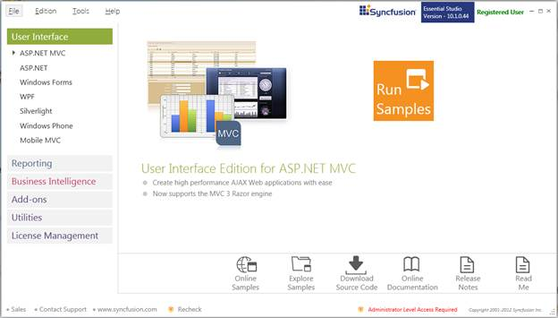
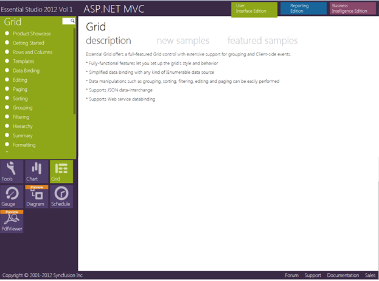

This section covers the location of the installed samples and describes the procedure to run the samples through the sample browser and online. It also provides the location of the source code.
Samples Installation Location
The Grid MVC samples are installed in the following location, locally on the disk:
<Install Location>\Syncfusion\EssentialStudio\<Version Number>\MVC\gridmvc\samples\3.5
Viewing Samples
To view the samples, follow the steps below:
1. Click Start>All Programs>Syncfusion>Essential Studio <version number> >Dashboard. The Syncfusion Essential Studio Dashboard <version number> window is displayed.

Figure 2: Syncfusion Essential Studio Dashboard
2. In the Dashboard window, click ASP.NET MVC in the User Interface panel and click Run Samples. The ASP.NET MVC Sample Browser window is displayed.
 Note: You can view the samples in any of the
following three ways:
Note: You can view the samples in any of the
following three ways:
· Run Samples—Click to view the locally installed samples.
· Online Samples—Click to view online samples.
· Explore Samples—Explore ASP.NET MVC samples on disk.

Figure 3: ASP.NET MVC Sample Browser
3. Click Grid in the bottom-left of the browser where other ASP.NET MVC products are displayed. The Grid samples are displayed.

Figure 4: Grid Samples Displayed in the ASP.NET MVC Sample Browser
4. Select any sample and browse through its features.
Source Code Location
The default location of the Essential Grid for MVC source code is:
[System Drive]:\Program Files\Syncfusion\Essential Studio\[Version Number]\MVC\Grid.MVC\Src